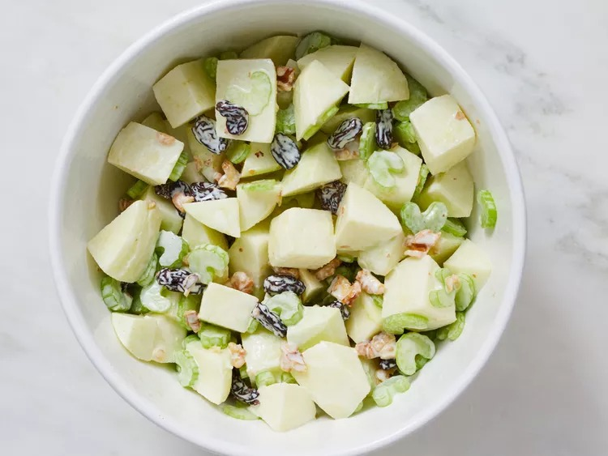

Hot German Potato Salad

Description
This a great salad recipe that will leave you wanting more.
It's really easy to make and can easily be made in large batches for those potlucks.
Ingredients
- ½ cup mayonnaise
- 1 tablespoon white sugar
- 1 teaspoon lemon juice
- ⅛ teaspoon salt
- 3 apples — peeled, cored, and chopped
- 1 cup thinly sliced celery
- ½ cup chopped walnuts
- ½ cup raisins (Optional)
Steps
- Gather all ingredients.
- Whisk mayonnaise, sugar, lemon juice, and salt together in a serving bowl.
- Stir in apples, celery, walnuts, and raisins. Cover and chill in the refrigerator until ready to serve.
Home